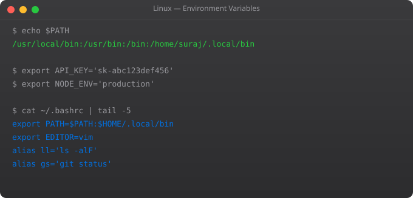

Package management is how Linux handles software installation and updates. Instead of downloading installers from websites, you install software from curated repositories with a single command. The package manager handles dependencies, verifies package authenticity, and can update all installed software at once. Understanding package management is essential for maintaining Linux servers.
sudo apt update # Refresh package list from repositories
sudo apt upgrade # Upgrade all installed packages
sudo apt full-upgrade # Upgrade + remove conflicting packages
sudo apt install nginx # Install a package
sudo apt install nginx -y # Install without asking confirmation
sudo apt install nginx=1.18.* # Install specific version
sudo apt remove nginx # Remove package (keep config files)
sudo apt purge nginx # Remove package AND config files
sudo apt autoremove # Remove unused dependencies
apt search nginx # Search available packages
apt show nginx # Show package details
apt list --installed # List installed packages
apt list --installed | grep nginx # Check if nginx is installed
apt-cache depends nginx # Show nginx dependencies# Install a .deb file downloaded manually
sudo dpkg -i package.deb
# Fix dependency issues after manual install
sudo apt install -f
# List installed packages
dpkg -l
dpkg -l | grep nginx
# Check if package is installed
dpkg -s nginx
# List files installed by a package
dpkg -L nginx
# Find which package owns a file
dpkg -S /usr/sbin/nginx# Add a PPA (Personal Package Archive)
sudo add-apt-repository ppa:deadsnakes/python
sudo apt update
sudo apt install python3.12
# Add a third-party repository (Docker example)
curl -fsSL https://download.docker.com/linux/ubuntu/gpg | sudo gpg --dearmor -o /usr/share/keyrings/docker-archive-keyring.gpg
echo "deb [arch=$(dpkg --print-architecture) signed-by=/usr/share/keyrings/docker-archive-keyring.gpg] https://download.docker.com/linux/ubuntu $(lsb_release -cs) stable" | sudo tee /etc/apt/sources.list.d/docker.list
sudo apt update && sudo apt install docker-ce
# View configured repositories
cat /etc/apt/sources.list
ls /etc/apt/sources.list.d/# Check what would be updated (without applying)
apt list --upgradable
sudo apt upgrade --dry-run
# Security updates only (safer for production)
sudo apt install unattended-upgrades
sudo dpkg-reconfigure unattended-upgrades
# Pin a package to prevent updates
echo "nginx hold" | sudo dpkg --set-selections
echo "Package: nginx
Pin: version 1.18.*
Pin-Priority: 1001" | sudo tee /etc/apt/preferences.d/nginx
# Check what is held
dpkg --get-selections | grep hold
# Unhold a package
apt-mark unhold nginxsnap install code --classic # Install VS Code
snap install kubectl --classic
snap list # List installed snaps
snap refresh # Update all snaps
snap info kubectl # Package details
snap remove kubectl # Remove a snap
# Snap packages are containerised
# They bundle all dependencies
# Run in a sandboxed environment
# Auto-update by defaultapt is the modern user-friendly interface combining apt-get and apt-cache. It shows a progress bar, has simpler syntax, and is recommended for interactive use. apt-get is the older tool, still used in scripts because its output format is stable and predictable.
sudo apt install -f (fix broken) resolves dependency issues. sudo dpkg --configure -a configures any unconfigured packages. sudo apt clean && sudo apt update refreshes the package cache. For severe issues: sudo apt-get install --reinstall package-name
apt-file search /usr/bin/nmap finds packages providing that file. Install apt-file first: sudo apt install apt-file && sudo apt-file update. Or use dpkg -S for files already on your system.
Prefer apt for server software where you want to manage versions carefully. Snap for desktop applications and tools where auto-updating is acceptable. Snap packages are larger (include dependencies) but are more isolated. Some packages are only available via snap (VS Code, many IDEs).
List available versions: apt-cache policy nginx. Install specific version: sudo apt install nginx=1.18.0-0ubuntu1. Pin that version to prevent auto-upgrade. On production systems, always test upgrades on staging first before applying to production.
In Part 10, we cover environment variables and system configuration -- controlling how Linux processes find and use their settings.
← Back to Blog# General compile-from-source workflow
sudo apt install build-essential gcc make
# Download source
wget https://example.com/software-1.0.tar.gz
tar -xzf software-1.0.tar.gz
cd software-1.0
# Configure (sets compilation options and install prefix)
./configure --prefix=/usr/local
# Compile (use -j4 to use 4 CPU cores)
make -j4
# Install (copies files to prefix)
sudo make install
# Verify installation
which mysoftware
mysoftware --version
# To uninstall cleanly (if Makefile supports it)
sudo make uninstall# List all installed packages sorted by install date
ls -lt /var/lib/dpkg/info/*.list | awk '{print $NF}' | sed 's/.*\///' | sed 's/.list//' | head -20
# Find recently installed packages
grep " install " /var/log/dpkg.log | tail -20
# Find packages installed today
grep "$(date +%Y-%m-%d)" /var/log/dpkg.log | grep " install "
# Check package integrity (verify installed files)
sudo debsums nginx
# Find packages with modified files (potential compromise indicator)
sudo debsums -c 2>/dev/null | head -20
# Full package audit report
dpkg-query -W -f='${Package} ${Version} ${Status}
' | grep "installed" | awk '{print $1, $2}' > /tmp/installed-packages.txt